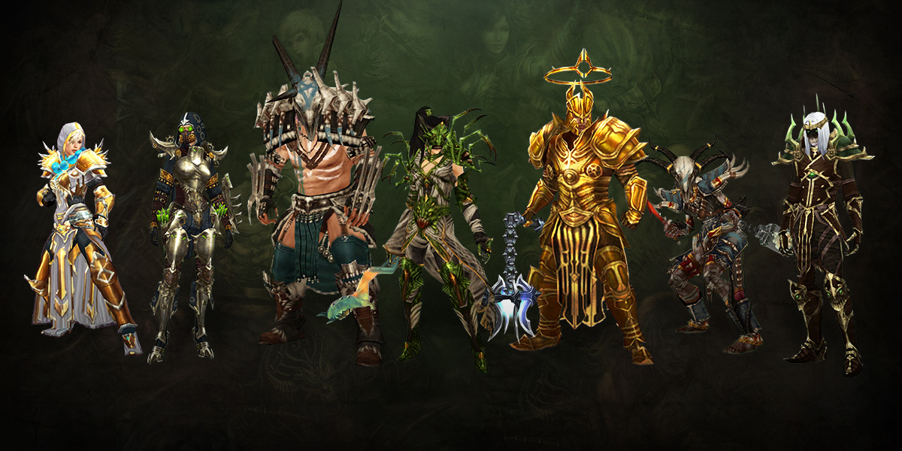

Temporada 28: Rites of Sanctuary

INÍCIO
Os Conjuntos de Classe disponíveis para completar certos capítulos na Jornada da Temporada, cortesia do Presente de Haedrig, mudaram mais uma vez. Listamos os conjuntos disponíveis abaixo. Para quem é novo na Seasons, veja como funciona:
Concluir os Capítulos 2, 3 e 4 da Jornada da Temporada irá recompensá-lo com três Presentes de Haedrig. Cada Presente contém algumas peças de um dos seus Conjuntos de Classe. Os jogadores só podem desbloquear um conjunto de classe dessa maneira por temporada entre Hardcore e Non-Hardcore, então escolha com sabedoria!
O conjunto que você receberá depende da Classe do personagem que você está jogando ao abrir cada Presente de Haedrig. Para coletar um conjunto de classe completo, você precisará abrir todos os três no mesmo personagem.
Sets da Temporada

- Bárbaro - Horda dos Noventa Selvagens
- Cruzado - Égide da Bravura
- Caçador de Demônios - Terras do Pavor
- Monge - Preceitos da Justiça
- Feiticeiro - Vestimentos de Mundunugu
- Arcanista - O Véu de Tifão
- Necromante - Máscara do Carnaval Ardente
Altares de sacrificio

- Para a temporada 28, Rites of Sanctuary, estamos viajando profundamente nas misteriosas ruínas de Festering Woods. Em meio a uma expedição de caça, cidadãos vindos de New Tristram tropeçaram em um sinistro Altar esculpido em um material arcaico com marcas enigmáticas. Abalados profundamente pelo aroma sobrenatural do monólito, eles recrutaram a ajuda do bravo Nephalem disposto a investigar esta descoberta sinistra que já foi deixada para o tempo - o Altar dos Sacrificios
- Link para montar seus bônus Clique Aqui